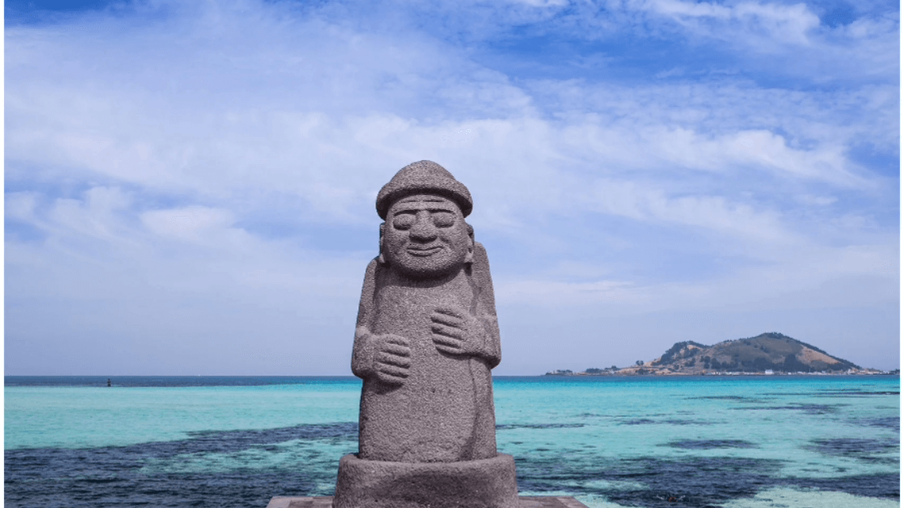
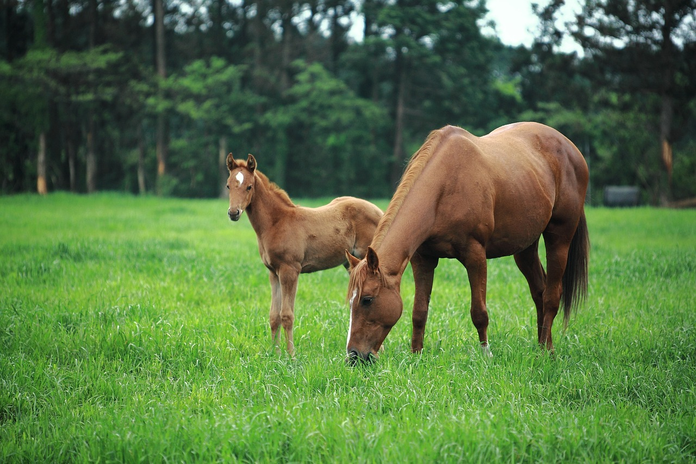

In Jeju Island, there is a community of women, some aged
in their 80s, which goes diving 10m under the sea to
gather shellfish, such as abalone or sea urchins for a
living without the help of oxygen masks. With knowledge
of the sea and marine life, the Jeju haenyeo (female
divers) harvest for up to seven hours a day, 90 days of
the year holding their breath for just one minute for
every dive and making a unique verbal sound when
resurfacing.
Dol hareubang

A dol hareubang (lit. stone grandfather), alternatively
hareubang or harubang, is a type of traditional volcanic
rock statue from Jeju Island. The statues are
traditionally placed in front of gates, as symbolic
projections of power and as guardians against evil
spirits. They were also symbols and ritual objects for
fertility.
Housing Culture
Jeju's choga (thatched roof houses) are a unique type
found only on the island. They are strong with piled
stone walls made even stronger by covering them with
soil. The roofs are covered with straw that is held down
by thick ropes tied tightly in a checkerboard pattern.
The early residents of Jeju tried to overcome the
abundant rain and wind of their natural environment and
in their wisdom, devised the unique thatched roof houses
of Jeju.
Horse

The Jeju horse is a horse breed native to the Jeju
Island in South Korea. There is a diverse array of
types, each differently identified depending on their
coat color. Jeju horses mature well in harsh conditions
due to their strength and fitness.
Jeju Language
Jeju language is not mutually intelligible with mainland
Korean dialects. While it was historically considered a
divergent Jeju dialect of the Korean language, it is
increasingly referred to as a separate language in its
own right. It is declining in usage and was classified
by UNESCO in 2010 as critically endangered, the highest
level of language endangerment possible.